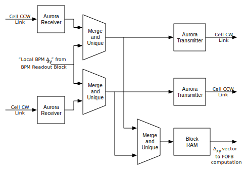
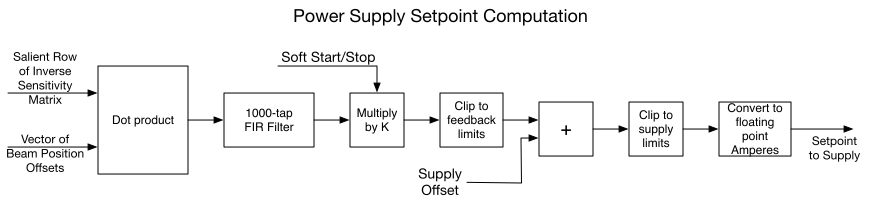

Introduction
The communication protocol from BPMs to cell controllers and among cell controllers is Aurora 8B/10B, 3.125 Gb/s.
The firmware to replicate the values from all the BPMs among all the
cell controllers is based on ‘Merge and Unique’ blocks which accept two
streams and merge them into one. Inside each block is a ‘received
packet’ bitmap and a ‘received packet’ counter. Each packet
contains the node number of the entity (BPM or cell controller, as
appropriate) which initiated that packet. The firmware in the
‘Merge and Unique’ block forwards a packet only if the corresponding bit
in the bitmap is clear. When a packet is forwarded the
corresponding bit in the bitmap is set and the counter is incremented.
At the fast acquisition rate all cell controllers clear all the bitmaps
and counters. The BPM readout block awaits values from the local
BPMs. Once all these values have arrived a packet containing all
the deviations from the desired orbit is sent to the cell controller
communication block.
The cell controller communication block accepts packets from the incoming Aurora links
and the local stream and forwards them to the alternate outgoing Aurora
links. Outgoing packets to each link are also merged and stored
in the local dual-port RAM. Once the number of packets forwarded
to the dual-port RAM reaches the number of cell controllers in the
system the dual-port RAM contents are made available to the fast orbit
feedback processing firmware.
Local BPM Readout
The Aurora receiver blocks convert incoming
Aurora packets from the clockwise and counterclockwise links to AXI
streams. The two AXI streams are merged into one with data from a
particular BPM appearing only once. The values are stored in
block RAM until values from all locally-connected BPMs have been
received. The orbit setpoints are then subtracted and the results
sent as an AXI stream to the cell communication block. The raw
(before setpoint removal) BPM values are also sent to the Errant
Electron Beam Interlock blocks.
Errant Electron Beam Interlock
Each cell controller contains two EEBI blocks. Each EEBI block subtracts an offset from two local BPM values and confirms
that the results are within a specified range. If this is not so, or if the
difference between the two results exceeds a specified range the
EEBI relay is opened and will remain so until the interlock is reset by manually activating
the front panel reset switch. The complete interlock state machine operation is as follows.
- If the state is TRIPPED, remain there with the relay OPEN until the front panel reset switch is activated,
- else, if the EEBI offsets or limits have not been received from the IOC, enter the UNCONFIGURED state with the relay OPEN,
- else, if the beam current reading from the IOC is up-to-date and
the beam current is below threshold, enter the UNDERCURRENT state with
the relay CLOSED,
- else, if the beam position readings are more than one fast
acquisition interval old, enter the TIMEOUT state with the relay OPEN,
- else, if a beam position monitor ADC is clipping (input is out of range), enter the CLIPPING state with the relay OPEN,
- else, if any beam position or beam trajectory is out of range, enter the TRIPPED state with the relay OPEN,
- otherwise enter the ARMED state with the relay CLOSED.
Thus the following occurs when the beam current reading from the IOC is late.
- If the state was UNDERCURRENT the state becomes:
- TIMEOUT if selected BPM readings are stale (non-latching fault),
- CLIPPING if a BPM ADC is clipping (non-latching fault),
- TRIPPED if any BPM value or trajectory is out of range (latching fault),
- ARMED if none of the above three conditions are met,
- otherwise the state remains the same, assuming that no other conditions changed.
Cell Communication
The Aurora receiver blocks convert incoming Aurora packets from the
clockwise and counterclockwise links to AXI streams. Note that the
terms 'clockwise' and 'counterclockwise' refer to the physical fiber
links. Data flow in both directions on both links. Each of
the incoming AXI
streams is merged with the stream of local BPM offsets and
forwarded to following firmware only if the packet is from a cell
controller that has not been previously sent. Values from the CCW
link plus local stream are converted to Aurora packets and sent to the
CW cell link. Values from the CW link plus local stream are
converted to Aurora packets and sent to the CCW cell link. The CCW
plus local stream and CW plus local stream are merged and stored in
block RAM. When values from all cell controllers in the system
have been received the contents of this block RAM are used by the fast
orbit feedback computation block to determine the settings to be sent to
the power supplies for which this cell controller is responsible.

Corrector Power Supply Setpoint Computation
Once the cell controller has received the beam positions from its
local beam position monitors, computed the deviations of those positions
from the desired location and received the deviations from desired
locations of the beam position monitors attached to all the other cell
controllers it computes the fast orbit feedback corrector currents using
the firmware outlined in the following subsections. The following
figure summarizes the operations carried to to determine the setpoint value to be sent to each corrector power supply.

The dot product result is a fixed-point representation with a resolution of 2-10
mA (976.5625 nA) per count. All subsequent computations until the
conversion to floating point Amperes are carried out in this
representation. The soft start/stop operation ramps the fast orbit
feedback gain between zero and the specified value (or back) over
about 100 ms. The dot product is 26 bits wide so the range is
about ±32.7 A. The multiplier product and subsequent blocks are 28 bits
wide for a range of about ±131 A.
The soft start gain factor is held at 0 until all cell controllers
have indicated that their local FOFB enable status is asserted. A
cell controller's local FOFB enable status is asserted only when its EPICS enable is set, the beam current measurement from the IOC is up-to-date, and the beam current measurement from the IOC is above the EEBI threshold.
Inverse Sensitivity Matrix Multiplication
First a set of raw corrector currents is obtained by multiplying the vector of beam position deviations by the inverse
sensitivity matrix,
as shown in the following equation:
The matrix multiplication takes about 5.2 µs to complete irrespective of the number of rows. The
entire 1024 elements of the vector and of each row of the matrix always
take part in the computation. Missing beam position monitors are
handled simply by setting the corresponding matrix elements to zero.
The coefficient matrix elements are 32 bit two's complement
integers scaled from a range of [-1,1) A/µm so the least-significant bit of each element corresponds
to a value of 2-31 A/µm. The position deviation vector values have units of nm so the products of each term have a resolution of 2-31
mA. The least significant 16 bits are discarded before being sent
to the dot product accumulators and the least significant five bits of
the accumulators are discarded leaving a 32 bit two's complement product
vector with a resolution of 2-10 mA per count.
Filtering
Each element of the raw corrector current vector is passed through a
1000 tap FIR filter. Each filter has its own set of 1000
programmable coefficients with range [-1,1). The filter
computation takes about 5.2 µs to complete irrespective of the number of
correctors. If the sum of the coefficients for a given filter is 1.0 then that
filter will have unity DC gain and the result will have a resolution of 2-10
mA per count, the same as the result of the inverse sensitivity matrix
multiplication.
Gain
The filter outputs are multiplied by a per-supply gain factor before
being added to the slow orbit feedback offsets. Gain factor values
are in the range [0,16).
Fast Feedback Clipping
The scaled filter output may clipped to some range before
being summed with the offset provided by the slow orbit feedback system.
Slow orbit feedback offset
The scaled and clipped filter outputs are added to values set by the slow orbit feedback system.
Clipping
The summation result may clipped to some range before
being sent to the supplies.